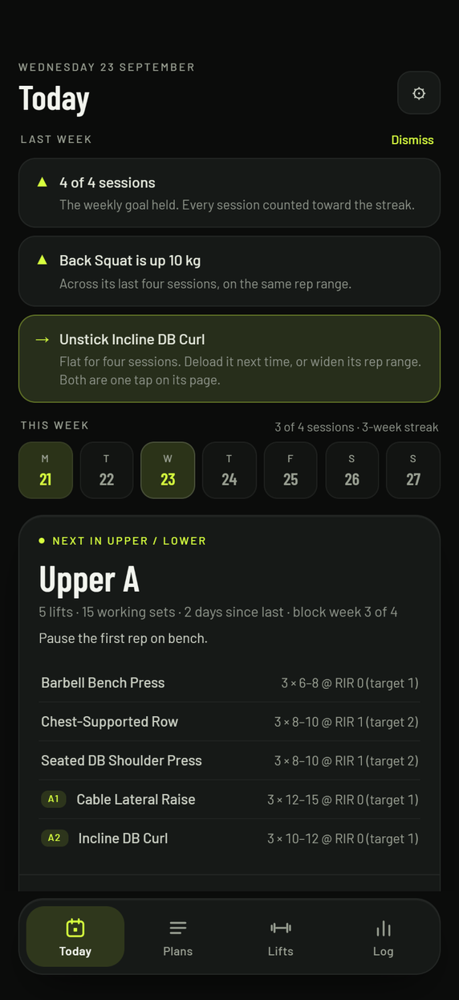
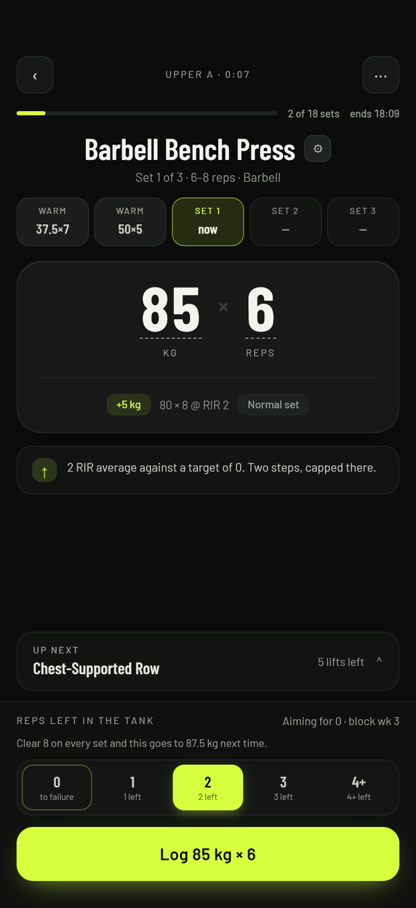
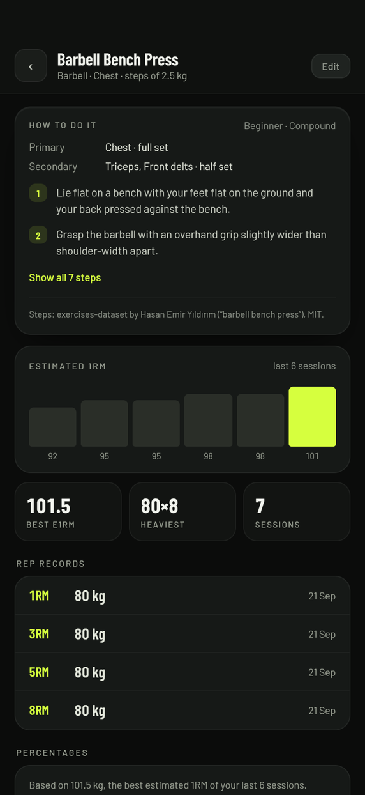
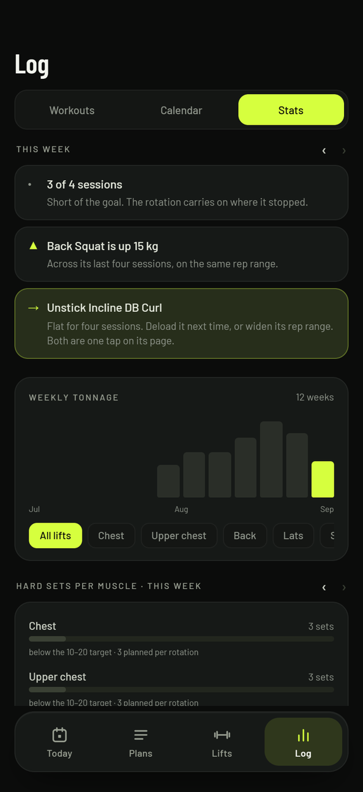
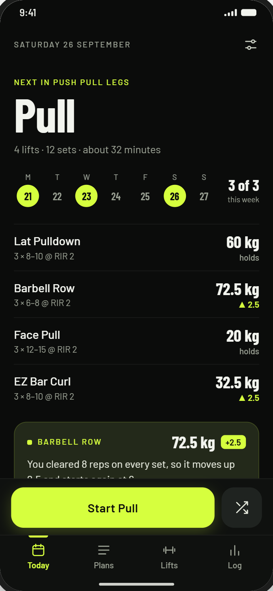
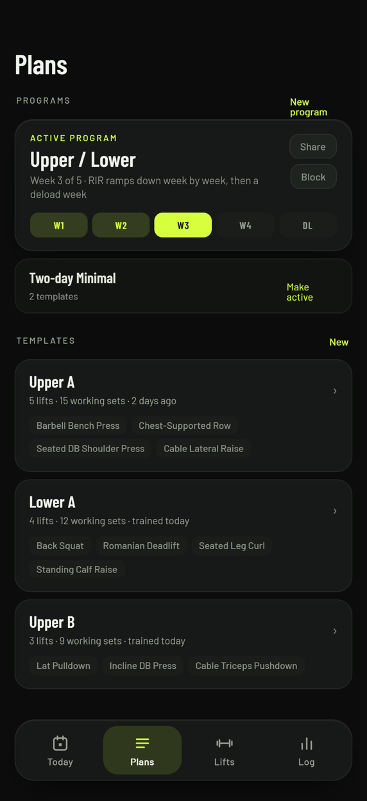

Early access · Android
The training log that tells you what weight to lift next.
Most apps remember what you did. Overload reads it — your reps and your reps in reserve (RIR) in your last workout — and proposes the next weight, with the reasoning written underneath. You still decide. You just stop guessing.
Free for everyone until 2027. No account. No ads. Your data never leaves your phone.

Testers wanted
Try it before it launches, free.
Overload is in closed testing. Testers get every feature unlocked at no cost while the test runs, in exchange for training with it for a couple of weeks and telling me what breaks.
What it does
Everything a workout needs, and nothing it doesn't.
Built for the gym floor: big numbers, one thumb, and no menu-diving between sets.

A workout screen you can read mid-set
Weight and reps in huge type, the set rail across the top, and one button to log. Rest starts itself.

Every lift, explained and charted
Estimated 1RM over your last workouts, rep records, percentages — and step-by-step form notes for 1,577 lifts, bundled in the app.

A week you can actually read
Hard sets per muscle against a target, weekly tonnage, and a plain-English debrief that names the one thing worth fixing.
The engine
It watches effort, not just numbers.
After each set you say how many reps you had left — your reps in reserve. Overload uses that the way a coach would: clear the rep ceiling or leave reps in reserve and the weight goes up; grind through two workouts under target and it proposes a step back before you stall.
"2 RIR average against a target of 0. Two steps, capped there."
Every proposal shows its reason, so you always know why the number changed — and you can overrule it in one tap.
- Training blocks that get harder week by week, then deload — and the week only turns once you've done every workout in it.
- First time on a lift? It finds your working weight in a few test sets instead of making you guess.
- Warm-ups that ramp to the day's weight, and shrink when the muscle is already warm.
- Stall detection that watches four workouts back: no new estimated 1RM or top weight, and it offers a deload, a wider rep range, or a swap.
- Supersets, drop sets, rest-pause, AMRAP, top set plus back-offs — all counted correctly.

Plans
Templates and programs that follow your week.
Build a template from your lifts with sets, rep range and target reps in reserve. Group templates into a program and Overload pins the next one on Today, tracks the rotation, and tells you what the week still owes.
- Rest timers per lift, adaptive to how the set went.
- Blocks on a whole program, not just one workout.
- An empty workout when you'd rather improvise.
- Swap a lift when a machine is taken; your history follows.

Your data
It stays on your phone. All of it.
No account
Nothing to sign up for
Install it and start training. There is no login, no profile and no server holding your training history.
No tracking
No analytics, no ads
The app contains no advertising or analytics code. Nothing about how you train is sent anywhere.
Yours to take
Export whenever
One tap exports everything as JSON or CSV, and automatic backups can write to a folder you choose.
Read the privacy policy — it is short, and it says the same thing.
Pricing
Free for everyone until 2027.
Every feature is unlocked, for everyone, through 31 December 2026 — no subscription, no payment details, nothing to redeem. Install it and train. What it costs after that is below, so you know before you start.
From 1 January 2027: €1.99 a month
A monthly subscription, the first month free for new subscribers, cancel any time in Google Play. You can subscribe before then if you would rather pay now, and the app keeps working without one — it just gets smaller. This is the plan the table describes; until 2027 every row on it is a yes.
| From 2027 | Free plan | With a subscription |
|---|---|---|
| Training, logging and the progression engine | Yes | Yes |
| Lift guides, rest timers, export and backups | Yes | Yes |
| Templates | 3 | Unlimited |
| Programs | 1 | Unlimited |
| Charts, records and weekly stats | — | Yes |
| Notes on lifts and templates | — | Yes |
Nothing you make is ever deleted
If a subscription ends, every template, program and workout stays in the app. The three templates you trained most recently and your most recent program stay trainable; the rest wait, greyed out, until you subscribe again.
What you pay goes straight back into building the app: new features, fixes, and keeping it free of ads and accounts.
Early access
Being built in the open.
Overload is in early access. It is a real training app doing real work — the engine, the logging and the stats are what I use myself — but it is young, it will change, and you may meet a rough edge.
If something breaks or a number looks wrong, tell me. Bug reports and ideas go to the report form, or by mail to support.overload@gmail.com if you'd rather not have a GitHub account.
Nothing disappears into an inbox: every report lands on a public board, and the roadmap shows what is confirmed, what is being worked on, and what shipped.
FAQ
Questions worth answering.
Does it work offline?
Entirely. The only thing that needs a connection is checking your subscription with Google Play, and the last answer is remembered — so training in a basement gym is fine.
Do I have to log reps in reserve?
It is one tap per set, and it is what makes the proposals good. Skip it and the set is recorded at the target you planned for it, so the engine reads the workout as on plan — the honest tap is what earns you an accurate next weight. The linear rule ignores it either way, and sets imported from another app without an effort reading are progressed from reps alone.
Can I bring my history from another app?
Yes — Strong and Hevy CSV exports import, and Overload matches them to your lifts. You can also import a previous Overload export.
Is there a catch to it being free right now?
No. Early access is free for everyone until 31 December 2026 — the app does not ask for a subscription or a payment method before then, and you are not signed up to anything that starts charging later. From 2027 the app falls back to the free plan unless you subscribe, and nothing you made is deleted either way.
What happens to my data if I stop paying?
Nothing is deleted or hidden. You keep training on the free plan, and everything is still there — and still exportable — if you come back.
iPhone?
Not yet. Overload is Android only.
Where do the lift guides come from?
Two open datasets — the Free Exercise DB (public domain) and exercises-dataset (MIT) — bundled as text at build time, with the sources credited in the app. No images are shipped and no network requests are made for them.